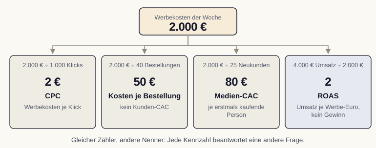

Modul 9: Web-Analytics und Erfolgsmessung
Zwei Begriffe werden oft verwechselt:
Jeder KPI ist eine Metrik. Aber nicht jede Metrik verdient den Rang eines KPI.
Quelle: Marketing metrics (2010)
Reichweite, Follower, reine Seitenaufrufe: Sie steigen verlässlich und sagen doch wenig über den Geschäftserfolg.
Bei jeder Zahl stellt sich dieselbe Frage:
Lässt sich aus dieser Kennzahl eine Entscheidung ableiten?
Wenn nein, ist es Dekoration. Wenn ja, ist es eine Steuerungsgröße.
Absolute Zahlen brauchen außerdem eine Bezugsgröße. Tausend Klicks sind je nach Budget Erfolg oder Enttäuschung.
Quelle: Kaushik (2010)
Einzeln überzeugen Kennzahlen selten, im Verbund dagegen sehr. Jede Aufgabe der Kundenreise trägt ihre eigene Leitkennzahl.
1 Anwerben Reichweite, neue Besuchende
2 Überzeugen Verweildauer, wiederkehrende Besuche
3 Gewinnen Conversion und Conversion-Wert
4 Binden Wiederkäufe, Kündigungen
Quelle: Ahrholdt (2023)
Ein Armaturenbrett zeigt nicht alle messbaren Werte, sondern nur die wenigen, die für eine sichere Fahrt zählen.
Geschwindigkeit, Tankfüllung, Motortemperatur: mehr braucht es nicht. Ein Cockpit mit fünfzig Anzeigen lenkt nur ab.
Genauso reichen vier bis fünf gut gewählte KPIs, um eine Kampagne zu steuern.
Fiktive Woche: 2.000 Euro Werbekosten, 40 Bestellungen, 25 erstmals kaufende Personen.
1.000 Klicks · 800 Sitzungen · 40 Bestellungen aus 36 Sitzungen
Zähler, Nenner und Auswertungsfenster gehören zusammen.
4.000 Euro Nettoumsatz / 2.000 Euro Werbung = ROAS 2
40 Prozent Deckungsbeitrag vor Werbung ergeben 1.600 Euro. Nach Werbung: −400 Euro, vor weiteren Fixkosten.

Kennzahlen sind kein Applaus, sondern Steuerung. Wer Vanity-Metriken aussortiert, wenige KPIs bewusst wählt und sie entlang der Kundenreise anordnet, verwandelt rohe Zahlen in begründete Entscheidungen.
Jan Kirenz